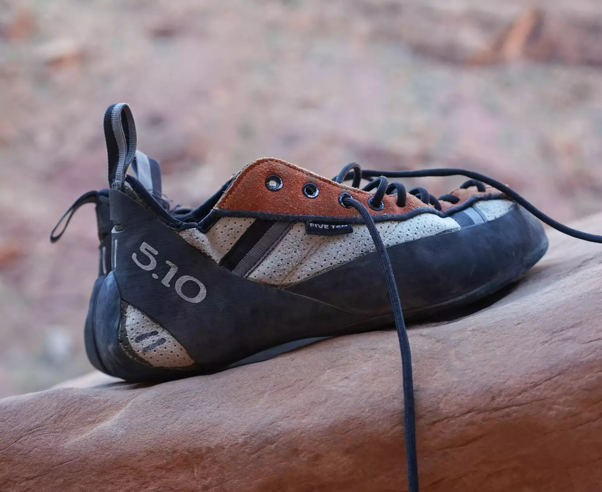
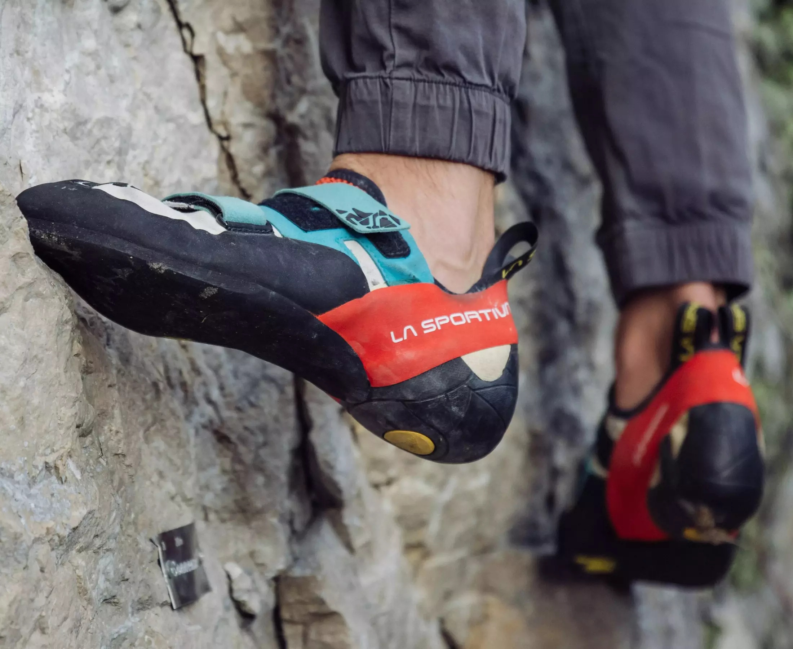
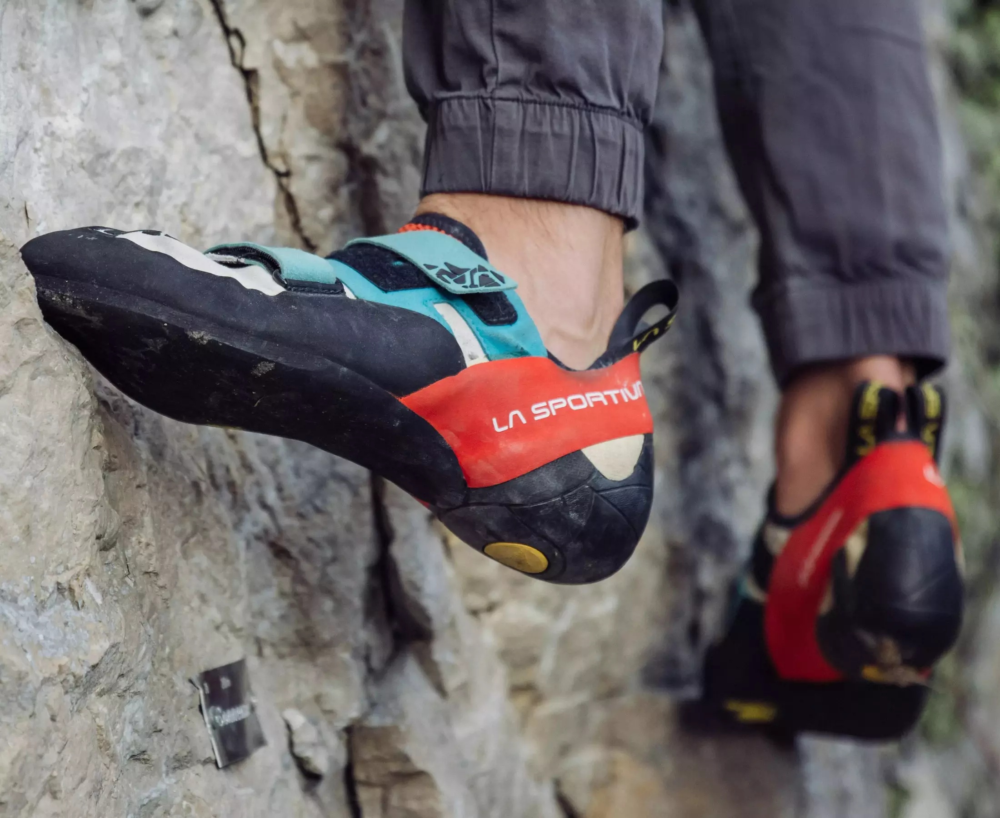

How to choose climbing shoes?
When first sarting climbing, buying the shoes is the first thing you will do, probably, and then realizing how many different shoes there are can be overwhelming. The prices vary quite much, but the general agreement is that they are not cheap, so you want to make a good decision from the beginning. Don't worry, we got you covered. In this article we are going to explain the main differences between the climbing shoes and guide you to an educated choice of shoes.
We are going to separate this into two sections: shoe features and shoe shape as we deemed these to be the most important ones when starting. If you are a more experienced climber or couldn't find what you needed, please write to us on the Get Help tab and we will guide you from your current needs.

Shoe features
Shoe Material
There aren't many to choose from and this feature regards stretching of the shoe. Unlined leather is the one that stretches the most and sintetic material stretches the least. In between there is lined leather.
Shoe closure
For these, there are also 3 options available: lace-up, strap and slip-on. The names are pretty descriptive but what they offer vary widely. Lace-up offers the most versatility as you can adjust how tight or loose it sits on your feet. With that in mind, it takes forever to pur on/take off. Strap(the most common one) is all about easy on and off feature, with much less feet adjustment. Slip-on are like very very tight socks and are great for sensibility and building stronger feet, as they don't have stiff sole and mid-soles.
Shoe shape
Neutral Shape
The most confortable climbing shoe you will find. Your toes will sit flat inside, so you can wear them for longer periods of time without having to take them out. They usually have stiffer midsoles which provide great support but less sensitivity. Safe to say that it is the most durable one because of the extra rubber.
Moderate Shape

From here we start to have a downward curvature that puts your feet into a stronger position for harder routes. Usually more sensitive giving you more control of your feet. The curvy shape offers a lot but also takes a bit of the confort. Little less durable as the rubber gets thinner for more sensibility.
Aggressive Shape
 

The most curved climbing shoe, that gives you power in your toes and your heels. Excellent for small foot holds and overhang climbs as gives the most sensibility of all. As you can imagine, is the most unconfortable one as makes your feet turn in non-natural ways. It wears out the faster from all options also.
How to Decide
"Great info guys, how do I choose then?"
We will list a couple of things that you have to answer based on your own
situation, and with the information we gave, you should be able to do choose
a proper shoe that will meet your needs. And if you can't, remember we are here
for you in Get Help.
- What kind of routes are you climbing? Indoor or outdoor? Overhang or slabs?
- How experienced are you?
- Have you felt the need for more precision?
- How strong are your feet?
Conclusion
As much as we would like to give you a definite answer, we can't. Sorry about that. The perfect shoe will be a very individual choice and there is no such thing as one-fit-all in this case.
We just hope we helped you with the information you needed to make this decision and that you find the perfect match for you (the climbing god knows how hard it is to simply find a pair of shoes in your size). See you out there!